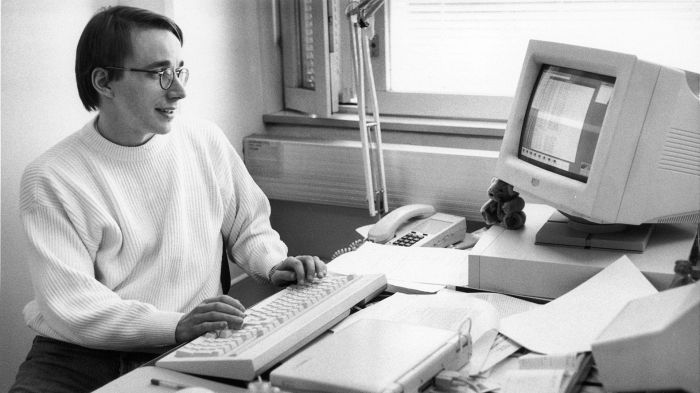

Введение

Линус Торвальдс — финский программист и создатель ядра Linux, одной из самых важных технологий в современной истории вычислений. Родившийся 28 декабря 1969 года в Хельсинки, он начал программировать ещё в подростковом возрасте, используя домашний компьютер Commodore VIC-20. В 1991 году, будучи студентом Хельсинкского университета, Торвальдс разработал первое ядро операционной системы Linux как хобби-проект, изначально назвав его Freax (сочетание слов "free" и "freak"). Однако вскоре проект получил название Linux — комбинацию имени Линуса и Unix.
Linus Torvalds is a Finnish programmer and the creator of the Linux kernel, one of the most important technologies in the history of modern computing. Born on December 28, 1969, in Helsinki, he began programming as a teenager using a Commodore VIC-20 home computer. In 1991, while a student at the University of Helsinki, Torvalds developed the first Linux operating system kernel as a hobby project, initially naming it Freax (a combination of the words "free" and "freak"). However, the project was soon named Linux—a combination of Linus's name and Unix.
Торвальдс принял революционное решение выпустить Linux под лицензией GNU GPL, что сделало систему свободным программным обеспечением. Это позволило тысячам разработчиков по всему миру участвовать в её совершенствовании, создавая одну из крупнейших совместных разработок в истории. Сегодня Linux работает на подавляющем большинстве серверов интернета, суперкомпьютерах, мобильных устройствах Android, встроенных системах и многих других платформах.
Хотя Торвальдс остаётся главным мейнтейнером ядра Linux, его роль эволюционировала от единственного разработчика до координатора огромного сообщества. Он известен своим прямым и часто резким стилем общения в списках рассылки разработчиков, что неоднократно вызывало дискуссии о культуре открытого программного обеспечения. В 2018 году он взял перерыв от работы над ядром для работы над своим поведением и улучшения коммуникации с сообществом. За свои достижения Торвальдс получил множество наград, включая премию Тысячелетия по технологиям в 2012 году.
"Talk is cheap. Show me the code."
— Линус Торвальдс